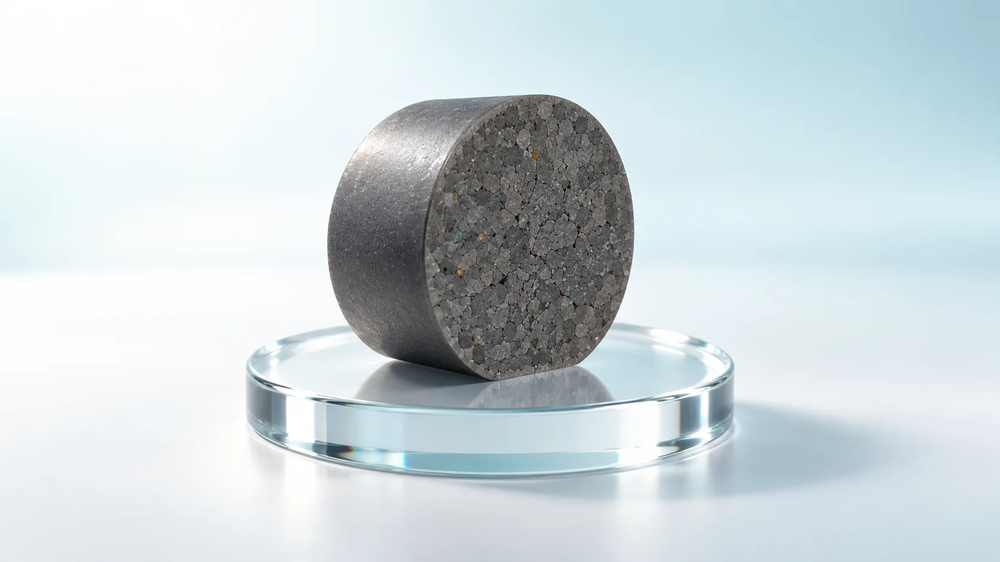
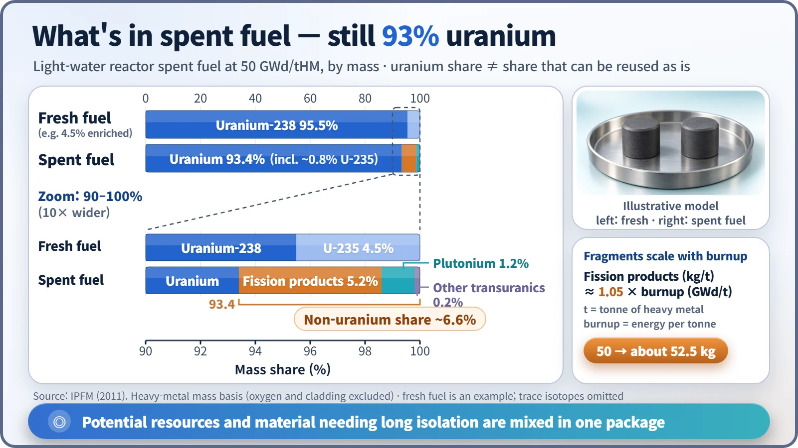
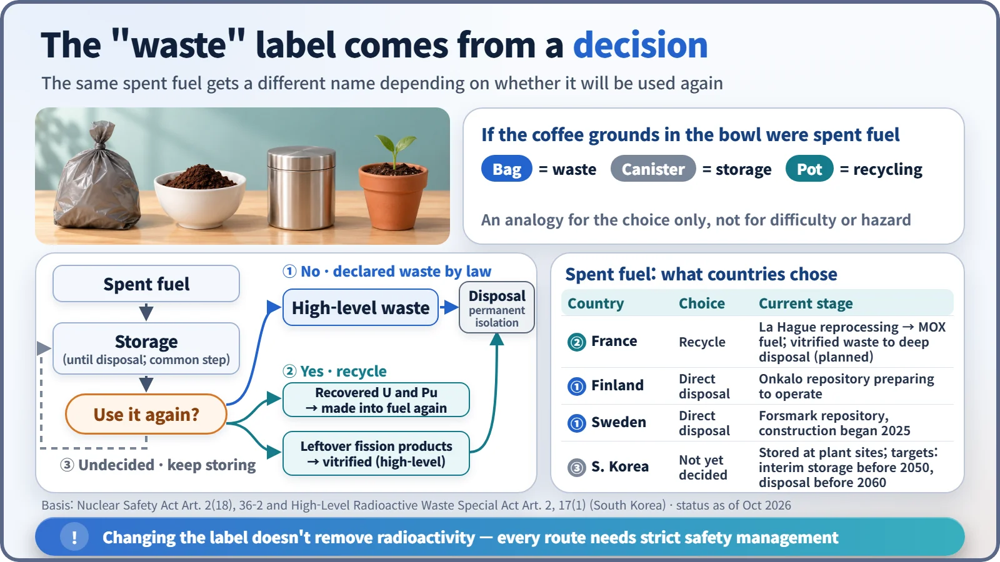

Society, Environment & the Future · 289
Trash or Compost? Is Spent Nuclear Fuel Waste or a Resource?
Still 93% uranium, with plutonium and fission products mixed in: whether it is waste depends on a decision, not on what it is made of.

Spent nuclear fuel is still about 93% uranium by mass, with about 1% plutonium and about 5% fission products, and whether it counts as waste depends on a decision, not on what it is made of. Under South Korean law and the IAEA Joint Convention, it becomes radioactive waste only when no further use is planned. Countries reading the same composition have reached different conclusions. [1]
Trash or compost?
You've probably seen a basket outside a café with a sign: "Used coffee grounds, free, help yourself." To one person it's trash; to someone who grows houseplants, it's free compost. Same grounds, different name, and what decides the name is what someone has decided to do with them.
Spent nuclear fuel faces exactly the same question. Instead of arguing for or against, let's look at three things: what's inside it, what the law calls it, and why countries answer differently.
Read the label and you get a surprising number
Fresh reactor fuel is almost entirely uranium: about 4–5% uranium-235, which splits easily, and the rest uranium-238. According to reference values from the International Panel on Fissile Materials (IPFM), light-water reactor fuel with a burnup of about 50 GWd/tHM (the total energy one tonne of fuel has produced) comes out like this: [1]
| Component | Share by mass | What it is |
|---|---|---|
| Uranium | about 93.4% | Mostly uranium-238; only about 0.8% uranium-235 |
| Fission products | about 5.2% | Fragments of split nuclei (cesium, strontium and so on) |
| Plutonium | about 1.2% (about 12 kg per tonne) | Formed when uranium-238 captures neutrons |
| Other transuranic elements | about 0.2% | Neptunium, americium, curium |
The shares are by mass of heavy metal, excluding oxygen and cladding. Used-up fuel that is still 93% uranium? A little surprising.
There's a simple proportion here too. Fission products grow almost in step with burnup: fission products (kg per tonne) ≈ burnup (GWd per tonne) × about 1. Burn to 50 and about 50 kg per tonne, roughly 5%, becomes fragments. The often-quoted "95% uranium, 4% fission products" is a rounded figure from an era of lower burnup. [2]

Reading the label again with coffee grounds
Grounds still contain useful organic matter, which is why they make compost. In spent fuel, the leftover uranium and plutonium play that role. Plutonium can be made into fuel again, and uranium can be recycled if conditions are right.
The catch: the remaining uranium is only about 0.8% uranium-235, close to natural uranium (about 0.7%). It's like soil with most of the nutrients gone. It can't go straight back into the reactor; it has to be re-enriched or used in a different kind of reactor.
Meanwhile, the fission products and transuranic elements, only about 5% by mass, produce most of the radioactivity and heat. Material that could be a resource and material that must be isolated for a long time are mixed together in one package. That is where the question begins.
Who puts the "waste" label on?
South Korea's Nuclear Safety Act, Article 2(18), defines radioactive waste as "material subject to disposal," adding that this includes spent fuel that has been decided to be disposed of under Article 36-2. The Special Act on the Management of High-Level Radioactive Waste, enacted in 2025, has the same structure: spent fuel is regarded as high-level radioactive waste once it is decided to be disposed of. [3]
So spent fuel doesn't automatically become waste when it leaves the reactor. The "waste" label is attached only when a decision not to use it any further is made through the legal procedure, much as coffee grounds become trash the moment they go into the garbage bag. The IAEA Joint Convention likewise defines radioactive waste as radioactive material "for which no further use is foreseen." Changing the label doesn't remove the radioactivity, though: every path still requires strict safety management such as cooling and shielding. [4]
That's why "spent fuel = high-level waste" isn't accurate. In recycling countries, the high-level waste is the glass-solidified fission products (with some transuranics) left after uranium and plutonium are recovered; in countries that don't recycle, the spent fuel itself becomes high-level waste.

Same label, different conclusions
- France chose recycling. At La Hague, spent fuel is reprocessed and the recovered plutonium is made into mixed-oxide (MOX) fuel for some reactors. The remaining vitrified high-level waste is planned for deep underground disposal.
- Finland and Sweden chose to treat spent fuel itself as waste and dispose of it in deep bedrock. Finland's Onkalo repository has completed regulatory review and is preparing for operation, and Sweden began building its Forsmark repository in 2025.
- South Korea has not yet decided whether to recycle. Spent fuel is stored at plant sites, and the special act sets targets of starting an interim storage facility before 2050 and a disposal facility before 2060. Pyroprocessing (dry recycling) is at the research and development stage.
Why the split? The conditions each country weighs differ: reliance on imported uranium, the size of its nuclear fleet and existing facilities, geology and public agreement for a repository, cost, and international commitments on plutonium. Rather than one side being right, each choice is the same label read through different circumstances. [5]
What a handful of grounds leaves us to think about
Spent fuel is about 93% uranium, about 1% plutonium and about 5% fission products by mass (light-water reactor, 50 GWd/tHM). Under South Korean law it becomes radioactive waste when it is decided to be disposed of. France recycles, Finland and Sweden dispose directly, and South Korea has not yet decided. Just as we, not the grounds, decide whether coffee grounds are trash or compost, the name of spent fuel depends on a decision society makes, and making it well starts with knowing exactly what's inside.